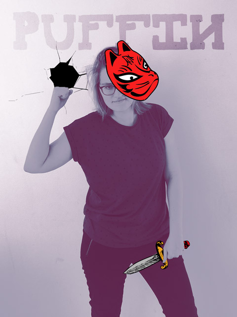
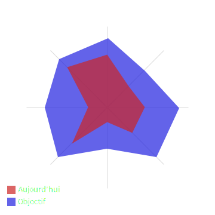

Puffin
Wittner Déborah
Double face, warrior/rogue
Spécialités et compétences: montages vidéos et retouches photos.
Pouvoirs et armes: Créer l'émotion par télékinésie... Ou bien un clavier et souris.
Caractéristiques: Plutôt réservée, mais respecte ses valeurs. Petits pains au chocolat ou chocolatine? Petits pains au chocolat, bien évidemment. Passionnée d'astronomie.
